Recenzja marki: events-app
Podsumowanie
Fundament jest zdrowy: jeden krój (Albert Sans), wszystkie kolory w jednym pliku tokenów, prawie zero wpisanych na sztywno wartości, a „zdanie-wyszukiwarka” i wielkie numery dni dają portalowi charakter, którego nie ma typowy agregator wydarzeń. Marka rozjeżdża się jednak w trzech miejscach. Mapa mówi po angielsku i ma własną kolorystykę. Paleta nie przypisuje kolorom ról, więc zieleń znaczy naraz „akcję”, „kategorię”, „wybrane” i „błąd”, a złoto obramowuje prawie wszystko. Ta sama funkcja, np. filtr, przycisk główny czy przejście do następnego tygodnia, ma po 2–4 różne wyglądy. Copy jest po polsku poprawne, ale pisane kilkoma głosami naraz. Żadna z tych rzeczy nie wymaga przebudowy: wystarczy ustalić role kolorów, wybrać jeden wariant kontrolek i napisać krótką kartę głosu.
Inwentarz obecnej marki (stan w kodzie)
Paleta — packages/ui/src/tokens.css (+ motyw themes/gold-green.json)
| Token | Wartość | Gdzie używany | Kontrast na białym | |
|---|---|---|---|---|
--color-accent-strong | #32814b | pasek górny, kategorie na kartach, licznik na „dla szkół”, strzałki, wybrany filtr, komunikaty błędów | 4,80 | |
--color-accent | #4da167 | pinezki, klastry mapy, numer dnia w weekend, podkreślenie chipów | 3,18 (2,92 na tle weekendu) | |
--color-accent-soft | #fdede4 (brzoskwinia) | tło chipów zdania, wybrany preset w pickerze | — | |
--color-accent-soft-hover | #fbe0d0 | hover chipów zdania | — | |
--color-border | #dd9b0e (złoto) | obramowanie pasa tygodnia, wszystkich pigułek filtrów, pól dat, przycisków; separatory | 2,39 | |
--color-logo-dot | #dd9b0e | kropka w logo (na zielonym pasku 2,00:1) | — | |
--color-bg-weekend | #fff4e5 | kolumny sob/nd | — | |
--color-bg-subtle | #f5f4f1 | hover, szkielety, minione dni | — | |
--color-text | #1c1b19 | tekst, gruba linia pod nagłówkiem (4 px), przycisk „Pokaż” | 17,2 | |
--color-text-secondary | #4a4844 | miejsca, opisy | 9,12 | |
--color-text-muted | #6b6862 | karty poza zakresem | 5,55 | |
--color-text-tertiary | #949189 | zakres dat w nagłówku „dla szkół”, godziny presetów | 3,15 | |
--color-text-disabled | #cdd7d6 (chłodna szarość) | numery dni poza zakresem, nieaktywne punkty mapy | 1,47 | |
--category-* (8 szt.) | wszystkie #9bc1bc | nigdzie; tylko w gold-green.json | — | |
--color-map-water | #bfd7ea | nigdzie; mapa używa stylu OpenFreeMap | — |
Kolory wpisane na sztywno poza tokenami: tylko zapasowe wartości w EventsMap.tsx (#4da167, #cdd7d6, #fff), rgba(255,255,255,.75) w StripControls.module.css i #000 jako maska w SchoolFilters.module.css. Dyscyplina tokenów jest bardzo dobra.
Typografia
- Albert Sans (Google Fonts przez
next/font,latin-ext, wagi 400–800) jako jedyny krój, i w nagłówkach, i w tekście. Fallback: Helvetica Neue. - Skala modularna: baza 14 px × 1,125. Body 15,75 px, tytuł karty 15,75/600, zdanie wyszukiwania 31,9/500 (chipy 600), numer dnia 64,7/800 z trackingiem −0,04em, nazwa dnia 12,4/600 wersalikami z trackingiem 0,12em, logo 17,7/800.
Znak i nazwa
- Logo tekstowe „wydarzenia.”, pisane małymi literami, biała nazwa i złota kropka na zielonym pasku o wysokości 37 px. Podmarka: „wydarzenia. dla szkół”.
<title>to „Wydarzenia” i „Dla szkół”. Opis: „Sprawdź, co dzieje się w twoim mieście. Wydarzenia na wybrane dni na liście i na mapie.”
Głos i ton (pliki labels.ts)
| Miejsce | Tekst | Rejestr |
|---|---|---|
| Wyszukiwanie | „Pokaż mi wszystko wszędzie, w tym tygodniu o każdej porze.” | głos użytkownika, swobodny |
| Ładowanie | „Wczytujemy wydarzenia…” | „my”, ciepły |
| Pusty dzień | „Tego dnia nic pasującego.” (kursywą) | eliptyczny, potoczny |
| Pusty licznik | „Brak wydarzeń w tym terminie” | systemowy |
| Zły URL | „Nieprawidłowy zakres dat — pokazujemy bieżący tydzień.” | techniczny + „my” |
| Błąd | „Nie udało się wczytać wydarzeń. Spróbuj ponownie.” + przycisk „Spróbuj ponownie” | neutralny, z powtórzeniem |
| Skróty dni | pon wt śr czw pt sob niedz (DayTabs) i pn wt śr czw pt sob nd (kalendarz) | dwa zestawy |
Ustalenia
Krytyczne
krytyczneK1. Mapa jest obca językowo i wizualnie
/ (1440, 1280, 390) i dialog mapy na /dla-szkol (1440) · features/events/components/EventsMap.tsx (MAP_STYLE_URL = …/styles/bright)
Na polskim portalu mapa pokazuje „Poland”, „Warsaw”, „Germany”, „West Pomeranian Voivodeship”, „Holy Cross Voivodeship”, a nawet „Балтийское море” i „Беларусь”. Kolorystyka pochodzi z domyślnego stylu OpenFreeMap (niebieska woda, różowe drogi, beżowy ląd) i nie ma nic wspólnego z zielono-złotą paletą. Token --color-map-water istnieje, ale nie jest używany. Domyślny kadr na stronie głównej centruje się na Niemczech, więc „Germany” jest największym napisem w pierwszym ekranie. To największy pojedynczy element strony i najbardziej obcy marce. Kontrolki zostały spolszczone (MAP_CONTROL_LOCALE), więc niespójność widać tym wyraźniej.
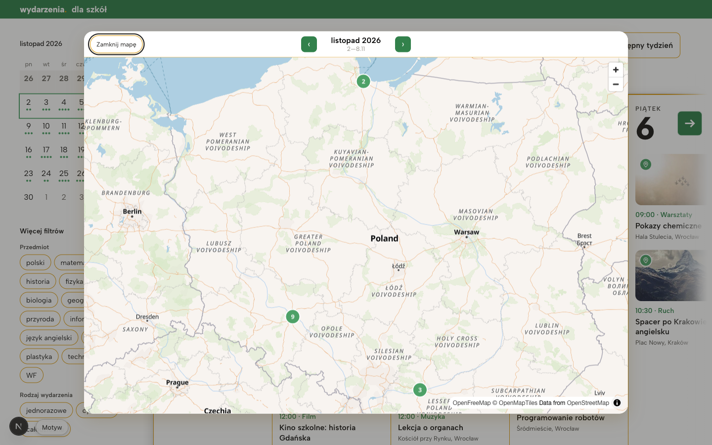
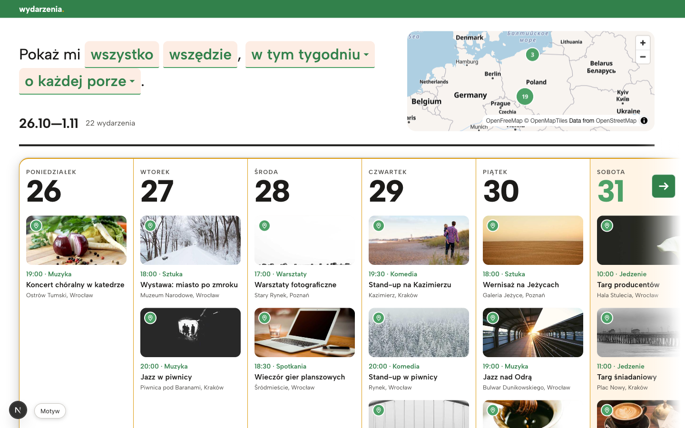
text-field warstw z etykietami na ["coalesce", ["get","name:pl"], ["get","name"]]. Przemalować kilka kluczowych warstw (woda, ląd, drogi główne) z tokenów: wodę na --color-map-water, ląd na ciepłą szarość z --color-bg-subtle, drogi na neutralną szarość. Wtedy zielone pinezki będą jedynym nasyconym kolorem. Domyślne granice ustawić na Polskę albo na obszar z danymi, a nie środek Europy.Ważne
ważneW1. Paleta nie przypisuje kolorom ról: trzy akcenty i złoto wszędzie
Wszystkie strony i szerokości · packages/ui/src/tokens.css
Obok siebie działają trzy rodziny akcentu: zieleń (marka i akcja), złoto #dd9b0e jako --color-border (obramowanie pasa tygodnia, każdej pigułki, pól daty, przycisków i separatorów) oraz brzoskwinia #fdede4. Do tego dochodzi czarna linia 4 px pod nagłówkiem. Token --color-accent-soft z nazwy jest „miękkim akcentem”, ale to nie odcień zieleni, tylko łososiowy róż. Chipy zdania (brzoskwiniowe tło, zielony tekst, zielone podkreślenie) wyglądają przez to jak z innego systemu niż złote pigułki obok. Złoto użyte jako zwykła ramka traci rolę wyróżnika: na białym ma kontrast 2,39:1, a kropka logo na pasku 2,00:1, więc tam, gdzie złoto ma być sygnaturą, ginie.
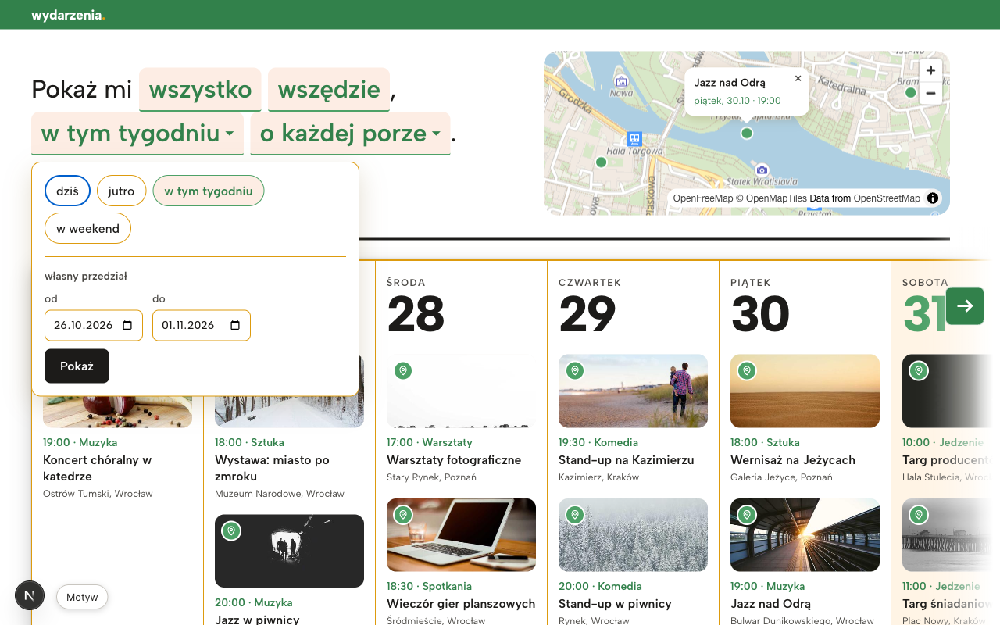
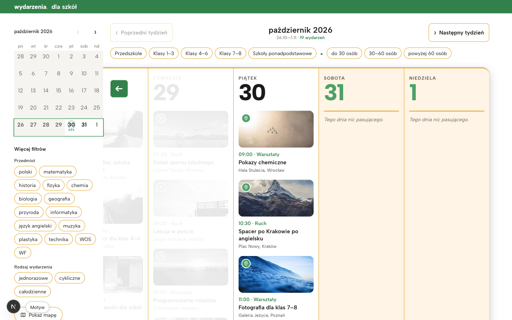
--color-border: #e4e1da, a złoto przechodzi do --color-highlight. --color-accent-soft zamienić na tint zieleni (rząd #e9f4ec / hover #dcefe2). Jeśli brzoskwinia ma zostać, jako ciepło marki, nazwać ją wprost (--color-warm) i używać do jednej rzeczy.ważneW2. Komunikaty błędów są w kolorze marki, czyli wyglądają jak sukces
/?from=2026-11-05&to=2026-11-01, 1280 · features/events/components/Header.module.css (.notice), features/search/components/Picker.module.css (.error)
„Nieprawidłowy zakres dat — pokazujemy bieżący tydzień.” i błędy walidacji w pickerze („Data „od” nie może być późniejsza niż „do”.”) mają color: var(--color-accent-strong), czyli ten sam zielony co kategorie na kartach i licznik wydarzeń. W tokens.css nie ma żadnego tokenu dla błędu ani ostrzeżenia.
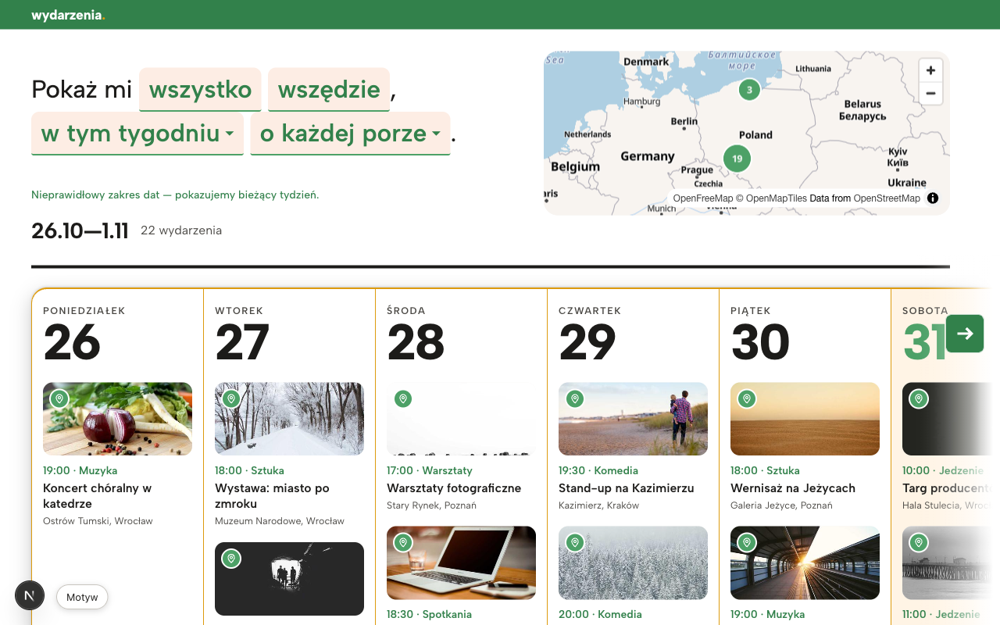
--color-danger (np. #b42318) i --color-notice (ciemny bursztyn, np. #8a5a00 na #fff4e5) i użyć ich w .notice i .error. Zieleń zostaje tylko dla marki i akcji.ważneW3. Ta sama funkcja ma kilka wyglądów (filtry, przycisk główny, nawigacja tygodnia)
/ i /dla-szkol/[week], 1440/1280 · SentenceChip.module.css, Picker.module.css, SchoolFilters.module.css, WeekArrow.tsx, StripControls.module.css, app/page.module.css
- Filtr: na stronie głównej to brzoskwiniowa „zakładka” z zielonym podkreśleniem. W pickerze to biała pigułka ze złotą ramką, a wybrana jest brzoskwiniowa. Na „dla szkół” pigułka ma złotą ramkę, a wybrana jest pełną zielenią z białym tekstem. To trzy różne znaczenia stanu „wybrane”.
- Chipy nieklikalne: „wszystko” i „wszędzie” wyglądają dokładnie jak klikalne „w tym tygodniu ▾”, ale są zwykłym
<span>. Wizualna obietnica marki nie jest spełniona. - Przycisk główny: „Pokaż” w pickerze jest czarny (
background: var(--color-text)), strzałki przewijania są zielone, a „Spróbuj ponownie” jest biały ze złotą ramką. - Następny / poprzedni tydzień: cztery style. Zielony kwadrat „→” w pasie, tekstowe „‹ Poprzedni tydzień” w złotej ramce, zielone kwadraty „‹ ›” w dialogu mapy i gołe „‹ ›” w kalendarzu. Do tego „› Następny tydzień” ma chevron po lewej stronie tekstu, więc wskazuje w przód, ale stoi z tyłu.
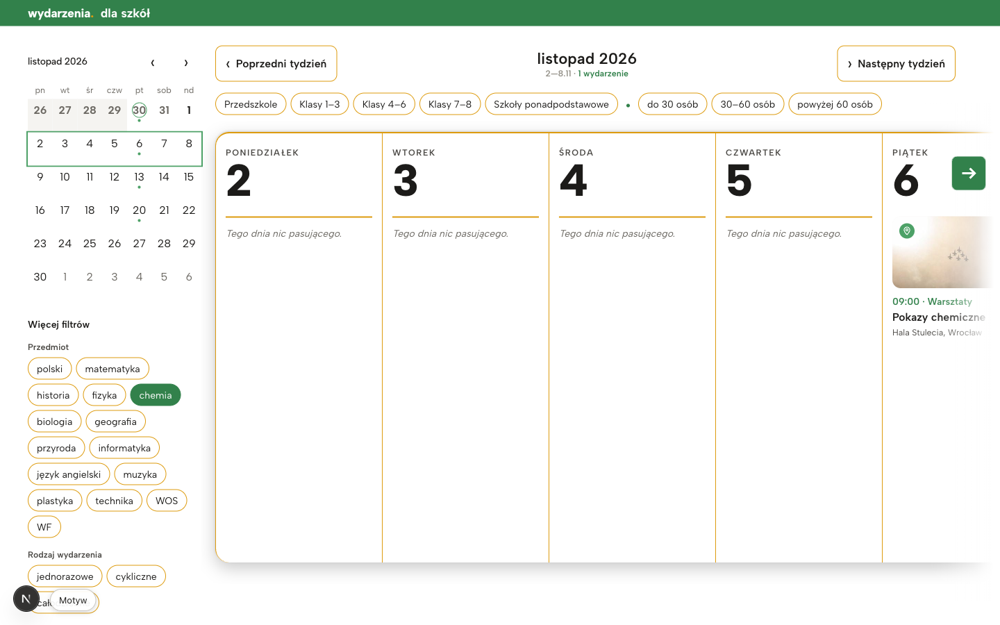
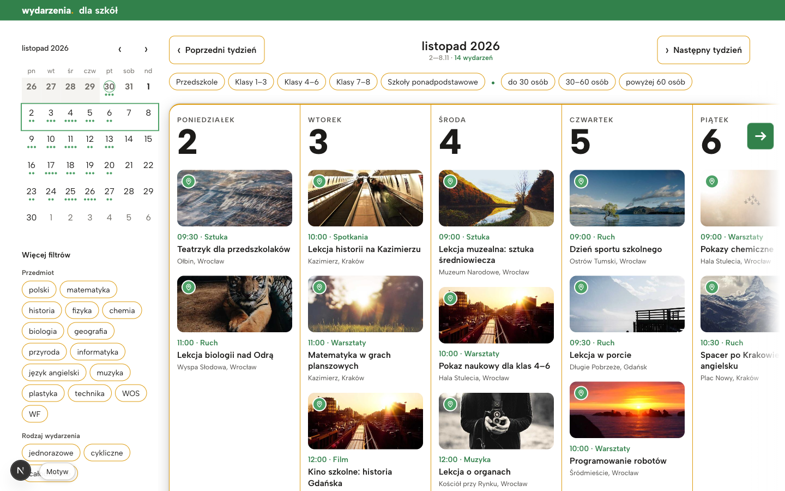
packages/ui. (1) Chip filtra: neutralna ramka, a wybrany ma tint zieleni, zieloną ramkę i zielony tekst, tak samo w pickerze i na „dla szkół”. (2) Przycisk główny zielony z białym tekstem, a drugorzędny z neutralną ramką. (3) Strzałka nawigacji: jeden komponent (zielony kwadrat) z chevronem po stronie kierunku. W wersji z tekstem: „Następny tydzień ›”. Chipy nieklikalne pokazać jako zwykły pogrubiony tekst, bez tła, dopóki nie dostaną akcji.ważneW4. Copy jest pisane kilkoma głosami
Wszystkie strony · features/events/labels.ts, features/schools/labels.ts, features/search/labels.ts, app/layout.tsx
- W jednym produkcie mówią: użytkownik („Pokaż mi…”), zespół („Wczytujemy”, „pokazujemy”), system („Brak wydarzeń w tym terminie”, „Nieprawidłowy zakres dat”) i ktoś potocznie („Tego dnia nic pasującego.”, kursywą, jako jedyny tekst w produkcie).
- „Nie udało się wczytać wydarzeń. Spróbuj ponownie.” i przycisk „Spróbuj ponownie” mówią to samo dwa razy.
- Dwa zestawy skrótów dni:
pon/niedz(zakładki na mobile) ipn/nd(kalendarz). - Wielkość liter: nagłówek „dla szkół”, ale tytuł karty przeglądarki „Dla szkół”. Przy logo pisanym małymi literami to może być celowe, ale nie jest nigdzie zapisane.
- Opis strony obiecuje „co dzieje się w twoim mieście”, a portal nie pozwala wybrać miasta (chip „wszędzie” jest nieklikalny) i miesza Wrocław, Kraków, Poznań i Gdańsk.
ważneW5. Znak jest za słaby, a „dla szkół” nie ma wejścia z marki głównej
Wszystkie strony · features/events/components/TopBar.tsx, TopBar.module.css
Logo „wydarzenia.” ma 17,7 px na pasku o wysokości 37 px, a numer dnia w programie ma 64 px. Najmocniejszym elementem typograficznym jest więc data, nie marka. Złota kropka, jedyny element znaku poza samym słowem, ma na zielonym kontrast 2,00:1 i jest ledwo widoczna. Portal nie ma stopki ani zdania o tym, czym jest. Na stronie głównej nie ma też żadnego linku do „dla szkół”: TopBar.tsx importuje SCHOOLS_PATH, styl .link jest gotowy, ale nic go nie renderuje. Podmarka istnieje tylko dla kogoś, kto zna adres.
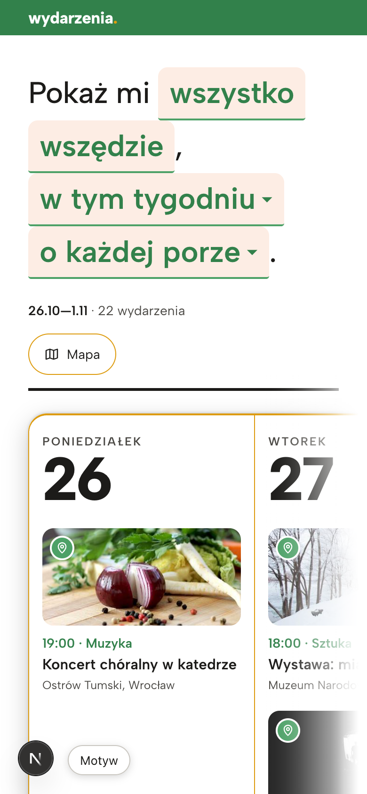
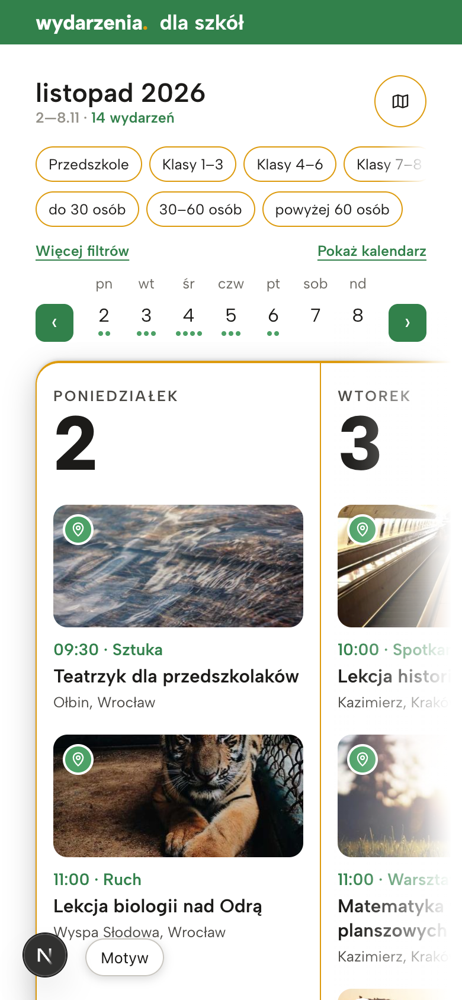
--text-3xl/4xl (~22–25 px), a pasek do ~52 px. Kropkę zostawić złotą, ale umieścić znak na białym tle albo rozjaśnić kropkę, żeby miała ≥3:1. Na stronie głównej dodać w pasku link „dla szkół” (styl .link już jest). Rozważyć minimalną stopkę z jednym zdaniem o portalu.ważneW6. Kolory marki nie przechodzą kontrastu tam, gdzie są tekstem
1440/1280, kolumna sob/nd na /; nagłówek tygodnia na /dla-szkol · DayColumn.module.css (--day-number: var(--color-accent)), SchoolsShell.module.css
Numer dnia w weekend (#4da167 na #fff4e5) ma 2,92:1, a to poniżej 3:1 nawet dla dużego tekstu. Zakres „2—8.11” w nagłówku „dla szkół” i godziny presetów są w --color-text-tertiary (3,15:1 przy ~12 px). Biała ikona na zielonej pinezce ma 3,18:1, co dla ikony wystarcza na styk.
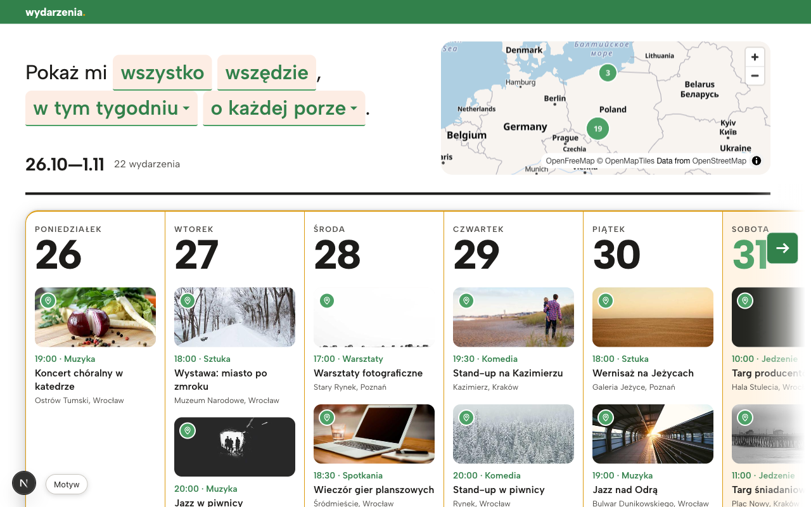
--color-accent-strong (4,41 na tle weekendu). --color-accent zostawić dla powierzchni i ikon. --color-text-tertiary przyciemnić do ok. #7a776f (≥4,5:1) albo nie używać go dla tekstu poniżej 18 px.Drobne
drobneD1. Myślniki w zakresach dat
/ i /dla-szkol, wszystkie szerokości · formatowanie zakresu w lib/format.ts
Zakres dat ma pauzę bez spacji, „26.10—1.11”. Filtry „Klasy 1–3” i „30–60 osób” mają poprawną półpauzę. Polska norma dla zakresów to półpauza: „26.10–1.11”.
drobneD2. Przecinek odkleja się od chipa w zdaniu
/, 1440 i 390 · SearchSentence.tsx, SentenceChip.module.css
Wewnętrzny padding chipa sprawia, że czyta się „wszędzie ,”, ze spacją przed przecinkiem. To samo dotyczy kropki po „o każdej porze ▾ .”. Zdanie jest główną sygnaturą marki, więc interpunkcja w nim jest szczególnie widoczna.
margin-left równy paddingowi chipa.drobneD3. Trzy kolory obwódki fokusu
1280, picker dat i popup mapy · EventsMap.module.css, Picker.module.css
Większość kontrolek ma obwódkę w kolorze tekstu, karty i kalendarz mają zieloną, a presety w pickerze („dziś”) i przycisk zamknięcia popupu MapLibre mają domyślną niebieską z przeglądarki.
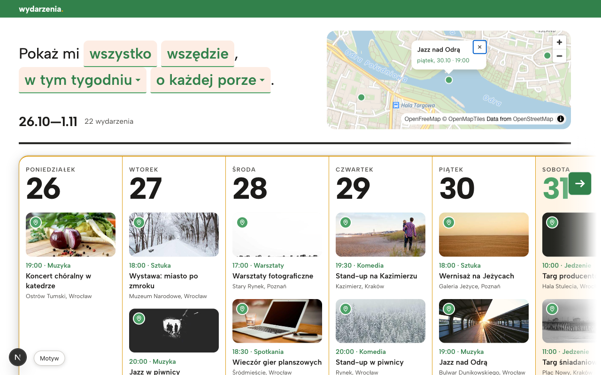
--focus-ring i reguła :focus-visible w globals.css, także dla .maplibregl-popup-close-button i .preset.drobneD4. Strzałka przewijania przykrywa numer dnia przy 1280
/, 1280 · StripControls.module.css
Zielony przycisk „→” leży na weekendowym „31”. Numer dnia jest sygnaturą wizualną portalu, więc przecięcie go wygląda jak błąd. Przy 1440 strzałka mieści się obok numeru.
drobneD5. Stan ładowania wygląda inaczej niż strona, którą zapowiada
/dla-szkol/[week] przy wolnej sieci, 1440 · WeekSkeleton.module.css, app/loading.tsx
Szkielet tygodnia to szare kolumny bez złotej ramki, cienia i nagłówków dni, więc po wczytaniu zmienia się cała forma pasa. Strona główna ma do tego inny wzorzec ładowania: tylko tekst „Wczytujemy wydarzenia…”.
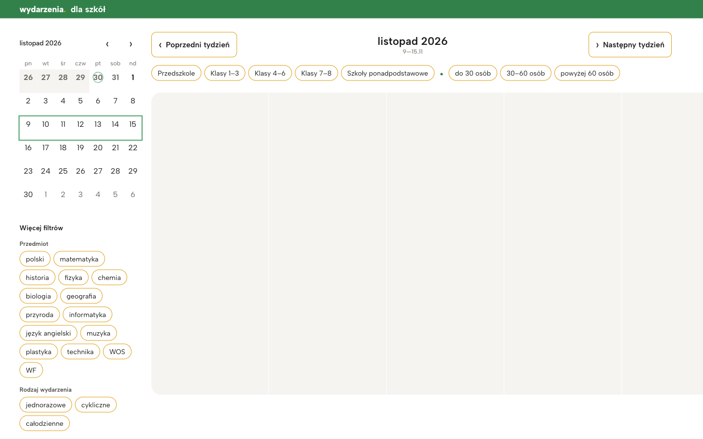
app/loading.tsx.drobneD6. Martwe tokeny w motywie
packages/ui/src/themes/gold-green.json, tokens.css
Osiem tokenów --category-* ma tę samą wartość #9bc1bc i nigdzie nie jest czytane. --color-map-water też nie jest używane. To nie jest błąd widoczny dla użytkownika, ale sugeruje kolory kategorii, których marka nie ma.
Poza oceną: zdjęcia na kartach to losowe obrazy z picsum.photos (mock), np. cebula przy „Koncercie chóralnym” albo tygrys przy „Lekcji biologii”, więc ich nie oceniałem. Kiedy pojawią się prawdziwe dane, warto zapisać kierunek zdjęć (kadr, ciepło, ludzie lub miejsca), bo zdjęcia zajmują ~40% powierzchni strony. Przycisk „Motyw” i „N” to narzędzia deweloperskie, nie część interfejsu. Stanu błędu (error.tsx) nie dało się wywołać na mockach, więc oceniłem go z kodu.
Co działa dobrze
- Zdanie-wyszukiwarka „Pokaż mi wszystko wszędzie, w tym tygodniu o każdej porze.” jest rozpoznawalne, po polsku naturalne i dobrze działa także na 390. Takiego elementu zwykle nie ma u konkurencji i warto go chronić.
- Wielkie numery dni (Albert Sans 800, ciasny tracking) z wersalikową nazwą dnia to wyraźna sygnatura typograficzna, spójna na obu stronach.
- Jeden krój, jedna skala: Albert Sans z
latin-ext(polskie znaki bez zarzutu), skala modularna w tokenach, wagi 400–800 użyte z umiarem. - Dyscyplina tokenów: praktycznie wszystkie kolory, odstępy, promienie i cienie idą przez
tokens.css. Dzięki temu poprawki z tej recenzji to głównie zmiany wartości, a nie refaktor. - Wspólne komponenty kart i pasa tygodnia między
/i/dla-szkol: podmarka wygląda jak ta sama rodzina. - Polszczyzna w szczegółach: poprawne formy liczebników (1 wydarzenie / 22 wydarzenia / 14 wydarzeń), spolszczone kontrolki mapy, etykiety ARIA po polsku, ciepłe tło weekendu.
Top 5 zmian o największym efekcie
- Spolszczyć i przemalować mapę (K1): etykiety
name:pl, woda, ląd i drogi z tokenów, kadr na Polskę. Jedna zmiana wEventsMap.tsxpoprawia największy element strony. - Nadać kolorom role (W1, W2, W6): neutralny
--color-border, złoto tylko jako wyróżnik,--color-accent-softjako tint zieleni, nowe--color-dangeri--color-notice, zieleń w tekście tylko jakoaccent-strong. - Jeden wariant dla każdej kontrolki (W3): chip filtra z jednym stanem „wybrane”, zielony przycisk główny, jeden komponent strzałki z chevronem po stronie kierunku.
- Karta głosu i przegląd copy (W4, D1, D2): jeden głos „my do ciebie”, nowe teksty pustych stanów i błędów, jeden zestaw skrótów dni, półpauzy w zakresach, interpunkcja w zdaniu.
- Wzmocnić znak i połączyć podmarkę (W5): większe logo z widoczną kropką i link „dla szkół” w pasku na stronie głównej.